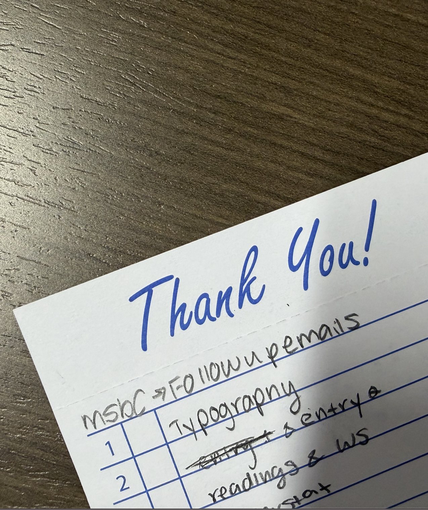

Shinola serves your matcha with a guest check slip under your drink, where they write your order details and name. While studying at this cafe, I flipped the check over and started scribbling notes. As I was writing, I caught myself really looking at the "Thank You!" printed across the top, which instantly reminded me of classic Looney Tunes title cards. Stressed as I was, that little bit of nostalgia gave me a genuine moment of relief. This typeface is Freestyle Script (specifically Freestyle Script Std Regular, created by Martin Wait for Letraset and later licensed by ITC). It falls under Casual / Brush Script, tracing back directly to penmanship and handwriting, which is a smart move for something transactional like a check; it makes the transaction more approachable and cheerful. It refutes the bad rep Freestyle Script often gets for being dated or cheesy; it really works here because it plays directly against the rigid, structured grid used to take orders.